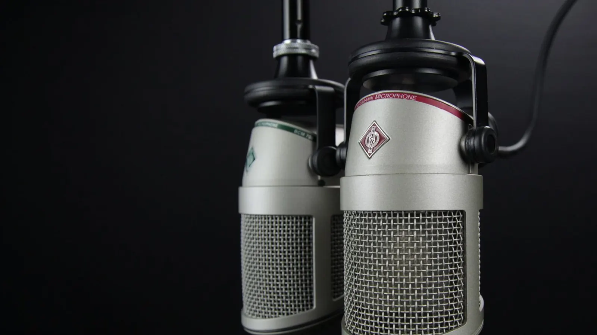
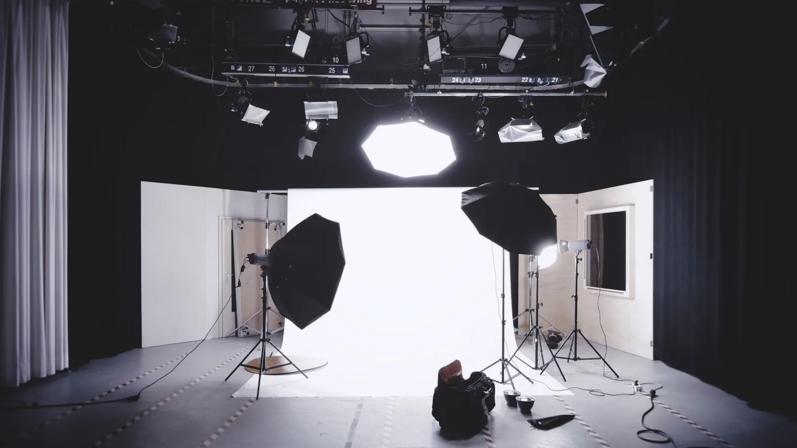
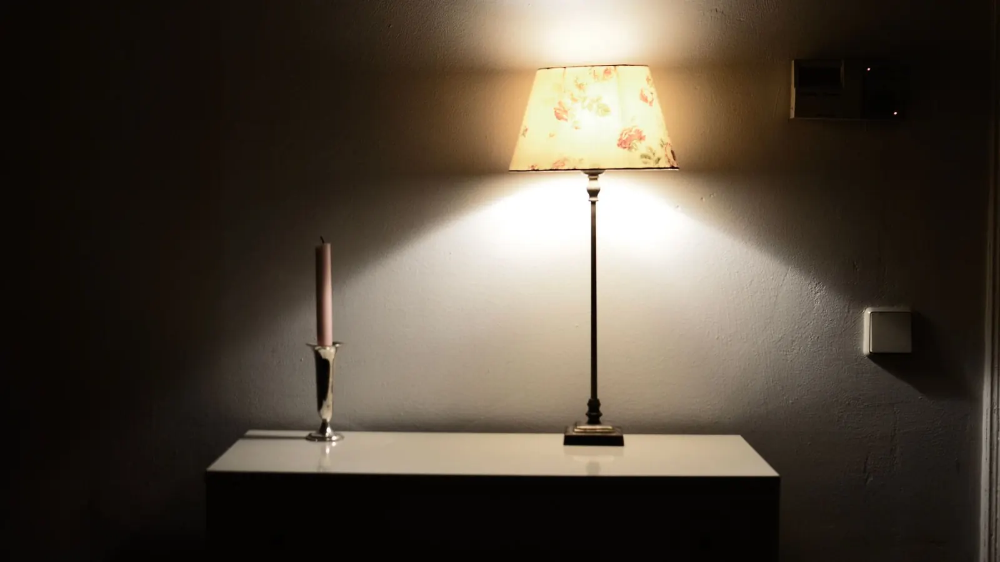
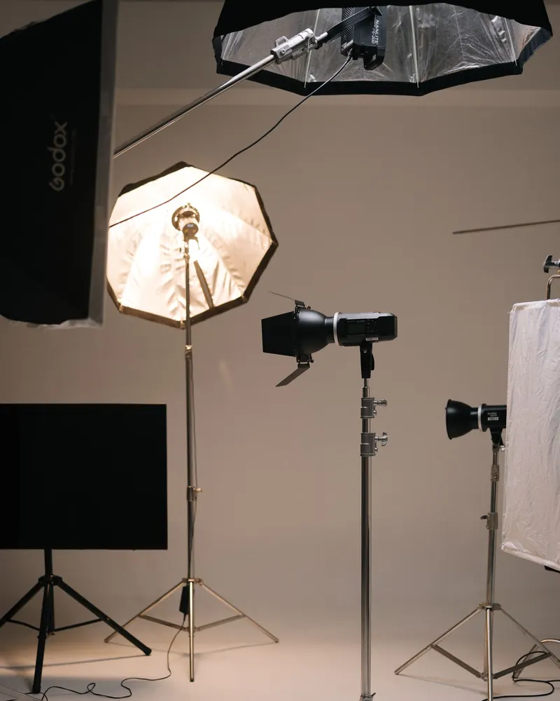
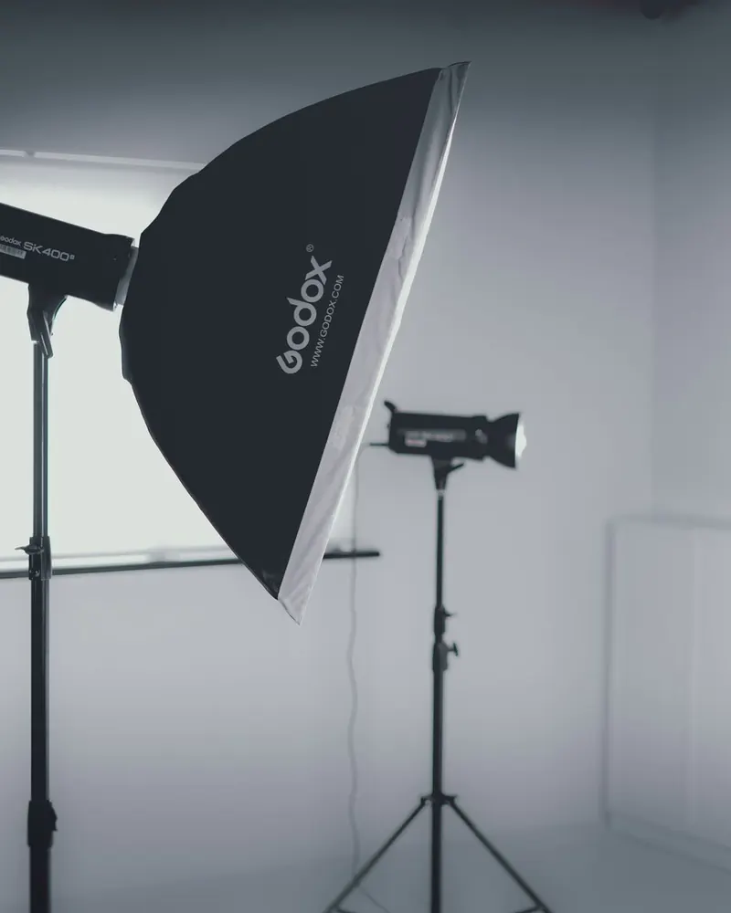
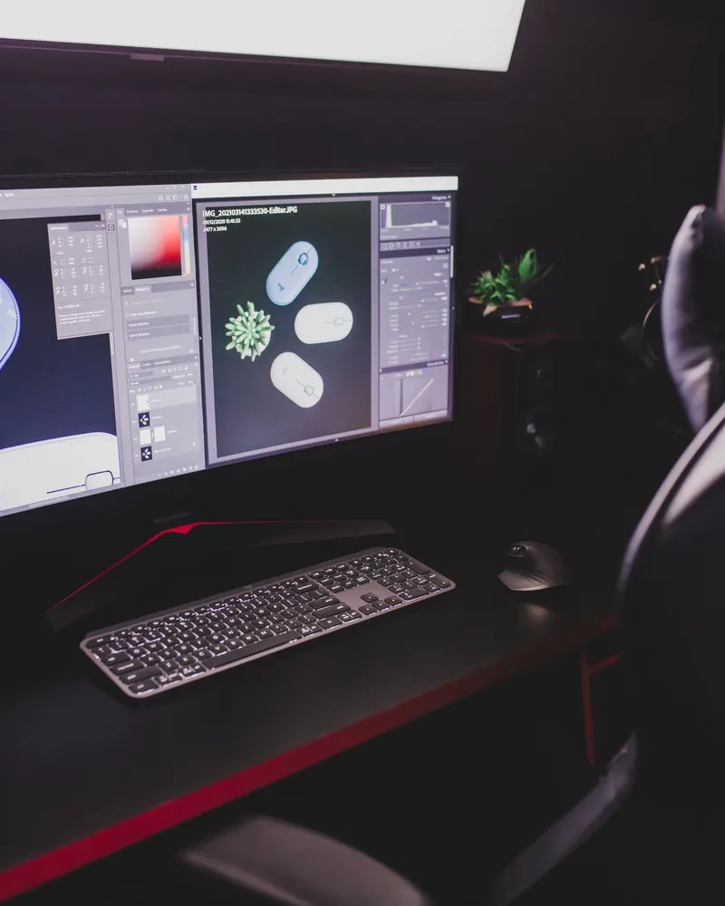
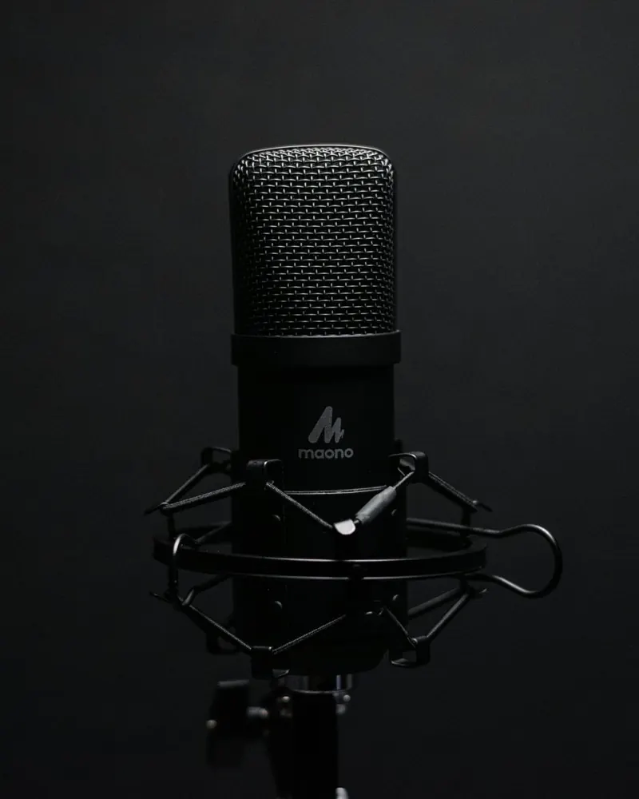
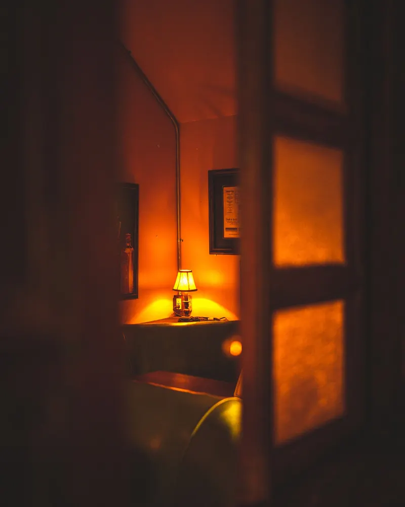

Capítulo 1 de 3
La luz es lo primero.
Un estudio de producción hecho para creadores digitales que quieren trabajar con calma, buena imagen y condiciones claras.
Postúlate
Capítulo 2 de 3
Sets listos para grabar.
Cabinas individuales con iluminación, fondos y conexión estable. Llegas, enciendes y produces.

Capítulo 3 de 3
Equipo técnico y acompañamiento.
Personas que cuidan el sonido, la imagen y los tiempos, para que tú solo te ocupes de lo tuyo.
Sets equipados, listos para grabar.





Todo lo que necesitas para producir, en un solo lugar.
-
Cabinas individuales con acceso controlado, fondos intercambiables y climatización.
-
Cámaras, iluminación, micrófonos y conexión estable ya instalados y probados antes de cada sesión.
-
Una persona de contacto que te orienta con la configuración, los horarios y cualquier duda del día a día.
-
Eliges tus franjas y reservas el set con anticipación. Las condiciones se acuerdan por escrito antes de empezar.
La privacidad no es un extra. Es el punto de partida.
Principio del estudio
Cuatro pasos, de tu postulación al primer set.
- Contacto. Nos escribes por el formulario o por mensaje.
- Conversación. Resolvemos dudas y definimos expectativas.
- Visita. Conoces el estudio y los sets antes de decidir.
- Primer set. Programamos tu primera sesión con acompañamiento.
Lo que casi todas preguntan primero.
¿Qué se produce en el estudio?
Contenido digital propio de cada creador: transmisiones en vivo, video y audio. Cada persona decide su línea de contenido; el estudio pone el espacio, la técnica y el acompañamiento.
¿Cómo funciona la postulación?
Completas el formulario o nos escribes por mensaje. Te respondemos en privado para coordinar una conversación y una visita.
¿Es confidencial?
Sí. Tus datos se usan solo para coordinar contigo y no se comparten con terceros. Este sitio no usa analítica ni rastreadores.
¿Qué requisitos hay?
Ser mayor de 18 años y presentar un documento de identidad vigente en la visita.
¿Cómo se organizan el trabajo y los pagos?
Las condiciones, horarios y formas de pago se acuerdan por escrito antes de empezar, de manera clara para ambas partes.
Hablemos.
Cuéntanos un poco y te respondemos pronto. Sin compromiso.